Im Menüpunkt
1 Buchen
1 Buchen
1 Zahlungsmittelkonten
oder Schnellaufruf
1 STRG + 4
können auf einfache Art Zahlungsmittelkonten (z.B. Bankkonto) bebucht werden. Als Zahlungsmittelkonto gelten nur jene Konten, bei denen im Kontenstamm (Menüpunkt Stammdaten/Konten/Sachkonten) der Kontentyp "Zahlungsmittelkonto" hinterlegt wurde.
Ein Konto kann nur dann als Zahlungsmittelkonto definiert werden, wenn kein Steuerkennzeichen und keine Kostenart hinterlegt wurde.
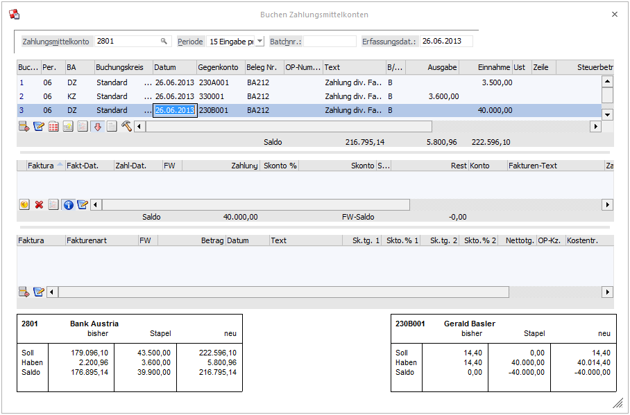
Das Fenster gliedert sich in 4 Teile, die abhängig von der erfassten Buchung unterschiedlich sein können:
ü Hauptbuchungsteil - bleibt immer gleich
ü Gegenbuchungsteil - bleibt immer gleich
Wird eine Debitoren- oder Kreditorenzahlung erfasst, gibt es zwei weitere Tabellen:
ü OP-Teil - hier werden alle Offenen Posten angezeigt.
ü Anzahlungsteil - in dieser Tabelle können Anzahlungen oder Zahlungen zu noch nicht vorhandenen Rechnungen erfasst werden.
Wird eine "normale" Sachbuchung erfasst, gibt es nur mehr eine weitere Tabelle:
ü Kosteninformationen - sofern beim Gegenkonto eine Kostenart hinterlegt wurde, können hier die kostenrelevanten Daten erfasst werden.
Hauptbuchungsteil
Ø Zahlungsmittelkonto
Im Feld Zahlungsmittelkonto muss das "Hauptkonto" eingegeben werden. Durch Drücken der F9-Taste kann nach allen Konten gesucht werden, bei denen im Sachkontenstamm (Menüpunkt Stammdaten / Konten / Sachkonten) die Option "Zahlungsmittelkonto" hinterlegt wurde.
Ø Periode
Im Feld Periode wird die Periode "14 automatisch" angezeigt. Das bedeutet, dass die Buchungsperiode vom Datum der ersten erfassten Buchungszeile abgeleitet wird. Alle danach erfassten Buchungen werden in diese Periode gebucht. Die gewünschte Buchungsperiode kann aber auch aus der Auswahllistbox gewählt werden.
Ø Batchnummer
In diesem Feld kann eine sogenannte Batchnummer hinterlegt werden, die auch in allen anderen Buchungsprogrammen zur Verfügung steht. Dadurch können Buchungen zu einem "Belegkreis" zusammengefasst werden. Wurde einmal eine Batchnummer eingetragen und damit Buchungen durchgeführt, wird diese Batchnummer benutzerspezifisch und buchungsprogrammunabhängig gespeichert. Ruft also der gleiche Benutzer wieder ein Buchungsprogramm auf, wird die zuletzt hinterlegte Batchnummer vorgeschlagen. Die Batchnummer kann durch Drücken der + - Taste jeweils um 1 hochgezählt werden. In den FIBU-Parametern (WinLine START, Menüpunkt Optionen/FIBU-Parameter) kann gesteuert werden, dass diese Batchnummer automatisch hochgezählt wird.
Nach Bestätigung des Zahlungsmittelkontos gelangt man in den Gegenbuchungsteil. Hier können folgende Informationen eingegeben werden:
Ø Erfassungsdatum
In diesem Feld wird das Einstiegsdatum vorgeschlagen, mit dem Sie die WinLine gestartet haben. Damit könnten Sie nachvollziehen, WANN eine Journalzeile tatsächlich gebucht worden ist. Für die Nachvollziehbarkeit der Erfassungsreihenfolge ist natürlich die vom System automatisch und unbeeinflussbar vergebene Prima Nota Nummer relevant. In WinLine START / Parameter / Applikationsparameter / FIBU-Parameter / Buchen kann für das Erfassungsdatum eingestellt werden, ob das Erfassungsdatum pro Stapel editierbar, pro Buchung editierbar oder nicht editierbar sein soll.
Ø Buch.Nr.
In dieser Spalte wird die fortlaufende Buchungsnummer des erfassten Stapels angezeigt. Dieses Feld hat reinen Informationscharakter und kann auch nicht verändert werden.
Ø Buchungsart
Es stehen sowohl die Standard- als auch firmenindividuelle Buchungsarten zur Verfügung.
Wenn in der Zeile noch kein Konto eingetragen ist, stehe alle Buchungsarten vom Typ "B", "DZ" und "KZ" zur Verfügung. Ist bereits ein Konto eingetragen, stehen abhängig davon nur noch die Buchungsarten für den entsprechenden Buchungsschlüssel zur Auswahl. Wird eine Buchungsart ausgewählt und danach ein Konto eingegeben, das nicht "zur Buchungsart passt", wird die Standard-Buchungsart verwendet. Auch ein evtl. hinterlegter Nummernkreis aus der Buchungsart wird in diesem Fenster unterstützt (Mikrostapel-Einstellungen aus der Buchungsart allerdings nicht).
Ø Buchungskreis
Diese Spalte wird im Buchungsprogramm angezeigt, um einen Buchungskreis der Buchung zuzuordnen, wenn in dem Programm
1 Stammdaten
1 Buchungskreise
Buchungskreise definiert wurden.
In der Auswahllistbox werden nur jene Buchungskreise angezeigt, für die der Benutzer die Berechtigung hat.
Vorgeschlagen wird der Buchungskreis Standard oder der in der Buchungsart hinterlegte Buchungskreis.
Diverse Auswertungen können nach Buchungskreisen selektiert werden.
Ø Datum
Eingabe des Buchungsdatums. Es muss darauf geachtet werden, dass alle Buchungen in die Periode gebucht werden, die im Hauptteil eingestellt wurde. D. h. für Buchungen in anderen Perioden müssen eigene Buchungen mit der richtigen Periode erzeugt werden. Durch Drücken der F3-Taste kann das aktuelle Systemdatum übernommen werden.
Bei Erfassung der ersten Buchung wird abhängig von diesem Datum die Buchungsperiode abgeleitet (sofern die Buchungsperiode auf "14 automatisch" gestellt war).
Ø Gegenkonto
Hier wird das entsprechende Gegenkonto eingetragen. Das Gegenkonto kann im Prinzip jedes Konto sein - es gibt keinerlei Einschränkungen.
Existieren Gegenkonten als Vorschlag zu dem bereits zuvor erfassten Konto, wird automatisch eine Autovervollständigungs-Auswahl-Liste angezeigt, in der die definierten Konten aufgelistet werden und wo das gewünschte Gegenkonto ausgewählt werden kann. Wird in dem Gegenkonto zu Tippen begonnen, wird auf die altbekannte Autovervollständigung-Funktionalität umgeschaltet und im gesamten Kontenstamm gesucht. Mit "F3" im Gegenkonto kann der Vorschlag der Gegenkonten jederzeit aktiviert werden, d.h. auch dann, wenn bereits ein Konto eingetragen ist oder wenn bereits die Standard-Autovervollständigung aktiviert wurde.
Ø Beleg Nr.
Eingabe der Belegnummer. Die Belegnummer kann in jeder Zeile des Gegenkontoteils unterschiedlich sein.
Ø Text
Eingabe des Buchungstextes. Der Buchungstext kann in jeder Zeile unterschiedlich sein. Zusätzlich dazu kann zu jeder Buchungszeile durch Anklicken des Notiz-Buttons oder durch Drücken der F9-Taste ein beliebig langer Buchungstext erfasst werden.
Ø B/N/F
Hier wird hinterlegt, wie der Buchungsbetrag erfasst wird:
B - Brutto: Der Betrag wird inkl. Steuer
eingegeben.
N - Netto: Der Betrag wird exkl. Steuer
eingegeben.
FB /FN - Fremdwährung: Der Betrag kann in Fremdwährung
erfasst werden und wird in Landeswährung umgerechnet. Voraussetzung dafür ist,
dass die entsprechende Lizenz vorhanden ist.
Ø Ausgabe/Einnahme
Je nachdem, welches Konto im Feld "Gegenkonto" hinterlegt wurde, kann entweder das Feld Ausgabe oder das Feld Einnahme bearbeitet werden:
Debitor - Es kann nur
das Feld Einnahme bearbeitet werden.
Kreditor - Es kann nur das Feld Ausgabe
bearbeitet werden.
Sachkonto - Es können beide Felder bearbeitet
werden.
Durch Drücken der F9-Taste oder Anklicken des -Buttons wird das Umrechnungsfenster geöffnet, in dem der Betrag auf Basis der im Mandantenstamm hinterlegten Landeswährungen (z. B. DEM und EURO) sowohl in Landeswährung 1 als auch in Landeswährung 2 eingegeben werden kann. Zum Buchen wird dann der Betrag in Landeswährung 1 verwendet.
Zusätzlich können noch die Felder Steuerzeile und Steuerbetrag bearbeitet werden.
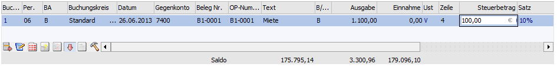
Unter der Tabelle der Gegenbuchungen werden die durch die Buchungen veränderten Werte "Saldo", "Soll" und "Haben" angezeigt. Handelt es sich bei dem Konto um ein Fremdwährungskonto (im Kontenstamm muss eine fixe Fremdwährung hinterlegt sein), dann werden in einer eigenen Zeile auch noch die Fremdwährungswerte angezeigt.
Wurde im Feld Gegenkonto ein Debitor bzw. Kreditor eingegeben, wird im 3. Teil die OP-Information des Personenkontos angezeigt.
Wurde im Feld Gegenkonto ein Sachkonto eingegeben, wird, abhängig vom Konto, die Kostenrechnungsinformation angezeigt und auch gefüllt.
Verlassen einer Buchungszeile
Beim Verlassen einer ungültigen oder nicht vollständig gefüllten Buchungszeile kann durch den Eintrag
[BUCHEN]
FragenZeileVerlassen=1
in der mesonic.ini eine Meldung ausgegeben werden.
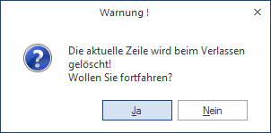
OP-Information
Hier werden alle Offenen Posten des Personenkontos angezeigt und das Programm führt einen automatischen Zahlungsvorschlag durch, d. h. die vorhandenen Fakturen werden nach der Fakturennummer sortiert so lange ausgeglichen, bis der komplette Buchungsbetrag aufgeteilt ist. Dieser Vorschlag kann aber jederzeit überarbeitet werden. Dabei stehen folgende Felder zur Auswahl:
Ø Checkbox
Ist die Checkbox aktiv, dann wird diese Faktura im Zuge der Buchung ausgeglichen. Ist die Checkbox inaktiv, wird die Faktura von der Buchung nicht berührt.
Ø Faktura
Es werden die gespeicherten Fakturennummern angezeigt. Die Fakturennummer kann nicht editiert werden.
Ø Fakt-Dat.
Hier wird das Valutadatum der Faktura angezeigt.
Ø Zahlungsdatum
Das Zahlungsdatum wird mit dem Buchungsdatum vorbesetzt und kann geändert werden.
Ø FW - Fremdwährungscode
Wurde die Faktura in Fremdwährung erfasst (nur mit eigener Lizenz möglich), wird hier der Fremdwährungscode angezeigt. Dieser kann nicht editiert werden.
Ø Zahlung
Eingabe des Zahlungsbetrages. Dazu gibt es - neben der manuellen Eingabe - auch noch andere Möglichkeiten:
F3-Taste
Eingabe des Zahlungsbetrages. Durch Drücken der F3-Taste kann der Buchungsbetrag bzw. der Restbetrag (wenn der Buchungsbetrag bereits auf andere Fakturen aufgeteilt wurde) übernommen werden.
Shift + F3-Taste
Mit dieser Tastenkombination wird ein automatisch vorgeschlagener Skonto auf "null" gesetzt. Gleichzeitig wird im Feld Zahlung der gesamte eingebuchte Zahlungsbetrag vorgeschlagen. Nach der Bestätigung mit Enter wird im Feld Rest ein eventuell vorhandener Restbetrag vorgeschlagen.
Ø Skonto %
Hier kann ein beliebiger Prozentsatz eingegeben werden. Dadurch wird automatisch der Skontobetrag aus dem skontierbaren Fakturenbetrag errechnet.
Ist in den FIBU-Parametern die Option "Skontotoleranzen beim Vorschlag berücksichtigen" aktiviert, wird der Toleranzprozentsatz aus der im Personenkonto hinterlegten Zahlungsbedingung zu den Skontoprozenten addiert und vorgeschlagen, wenn die Faktura innerhalb der Skontofrist bezahlt wird. Die Toleranztage der Zahlungskondition erhöhen die Skontofrist.
Ø Skonto
Eingabe des Skontobetrages, falls die Rechnung unter Abzug eines Skontos bezahlt wurde. Durch Drücken der F3-Taste kann der abzugsberechtigte Skontobetrag in das Eingabefeld übernommen werden.
Bei Zahlung von Gutschriften wird kein Skonto automatisch vorgeschlagen. Wenn die Gutschrift mit Skonto bezahlt wurde, muss der Skontobetrag oder Skontoprozent manuell eingetragen werden.
Ø Rest
Hier wird, falls es sich um eine Teilzahlung handelt, der offene Restbetrag angezeigt.
Ø Zahlungstext
Hier kann ein 50 Zeichen langer Zahlungstext eingetragen werden.
Ø Zahlungsnotiz
Über F9 oder die Lupe kann in dem Feld Zahlungstext eine Notiz hinterlegt werden, In der Zahlungsnotiz kann beliebig viel Text eingetragen werden.
Ø Projektnummer
Hier wird die Projektnummer der dazugehörigen Faktura angezeigt, jedoch ist das Feld nicht editierbar.
Gutschriftentabelle
Werden Kunden- bzw. Lieferantenzahlungen gebucht, steht noch eine dritte Tabelle zur Verfügung. In dieser Tabelle können, sofern notwendig, Gutschriften und Vorauszahlungen mit folgenden Informationen erfasst werden.
Ø Faktura
Eingabe der Gutschriftennummer
Ø FW
Der Fremdwährungscode wird aus der Buchungszeile übernommen.
Ø Betrag
Der Betrag wird aus der Buchungszeile vorgeschlagen und kann ggf. editiert werden (wenn z.B. mehrere Gutschriften erfasst werden sollen).
Ø Text
Der Buchungstext aus der Buchungszeile wird vorgeschlagen und kann editiert werden. Durch Drücken der F9-Taste wird das Fenster "Fakturen-Notiz" geöffnet, in dem ein beliebig langer Text zu dieser Faktura eingegeben werden kann. Standardmäßig wird die Buchungsnotiz aus der Sachbuchungszeile übernommen.
Ø Zahlungskonditionen
Die Zahlungskonditionen werden vom Personenkontenstamm übernommen und können ggf. noch editiert werden.
Hinweis
Ist in den FIBU-Parametern die Einstellung "Eingabe von Fälligkeits- und Skontodatum anstelle der Netto- und Skontotage" aktiviert, so stehen die Felder
ü Fälligkeitsdatum anstelle der Nettotage
ü Skontodatum1 anstelle der Skontotage1
ü Skontodatum2 anstelle der Skontotage2
zur Verfügung.
Ø OP-Kz.
Das OP-Kennzeichen wird aus dem Personenkontenstamm übernommen und kann noch editiert werden.
Ø Kostentr.
Der Kostenträger wird aus dem Personenkontenstamm übernommen und kann noch editiert werden.
Ø Projektnummer
Hier kann die Projektnummer eingegeben werden, also jede Projektnummer eines Kunden- oder Serviceprojektes. Nicht angelegte Projektnummern und Kampagnen sind nicht zulässig.
Es können beliebig viele Gutschriften erfasst werden.
Kostenrechnungsinformation
Wird als Gegenbuchungskonto ein Konto angewählt, bei dem eine Kostenart hinterlegt wurde, wird die OP-Information durch die Kostenrechnungsinformation ersetzt. Nach Eingabe des Betrages kann durch Drücken der TAB-Taste in die Tabelle für die Kostenerfassung gewechselt werden.
Außerdem wird geprüft, ob der Benutzer die Berechtigung hat (WinLine KORE/Stammdaten/Kostenträger, -stellen, -arten), die eingegebene Kostenart und Kostenstelle bzw. den Kostenträger zu verwenden.
Dabei können folgende Felder bearbeitet werden:
Ø K.Art
Eingabe der Kostenart, max. 20stellig, alphanumerisch. Die Kostenart, die bei dem angesprochenen Sachkonto hinterlegt wurde, wird vorgeschlagen und kann ggf. editiert werden. Wird eine Einzelkostenart angewählt, kann auch ein Kostenträger angesprochen werden. Bei Eingabe einer Gemeinkostenart bleibt das Aufteilungsfeld K.Träger/Proj für die Aufteilung gesperrt.
Ø K.Stelle
Eingabe der Kostenstellennummer, der der Betrag zugeordnet werden soll.
Ø K.Träger
Eingabe der Kostenträgernummer (Achtung: nur bei Einzelkosten möglich).
Hinweis
Nach Eingabe des Kostenträgers wird geprüft, ob das Buchungsdatum auch innerhalb der Laufzeit des Kostenträgers liegt. Ist das nicht der Fall, wird eine entsprechende Meldung ausgegeben, die Buchung kann aber trotzdem weiter erfasst werden.
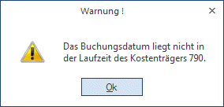
Ø Belegnummer
Belegnummer, max. 20stellig, alphanumerisch. Die Belegnummer wird aus der zuvor erfassten Buchungszeile vorgeschlagen und kann ggf. editiert werden.
Ø Datum
Eingabe des Buchungsdatums, wird aus der Buchungszeile übernommen.
Ø Text
Buchungstext, max. 25stellig, alphanumerisch, wird ebenfalls aus der Buchungszeile übernommen.
Ø Betrag
Wenn im Feld % ein Prozentsatz eingegeben wurde, füllt das Programm das Betragsfeld automatisch mit dem errechneten Wert aus. Dieser Betrag kann auch manuell eingegeben werden. Durch Drücken der F3-Taste wird der noch nicht aufgeteilte Betrag automatisch übernommen.
Durch Anklicken des - Buttons wird, sofern der KORE-Betrag nicht zur Gänze aufgeteilt wurde, eine neue KORE-Zeile erstellt, die die gleichen Werte enthält, wie die Zeile, von der aus der Button betätigt wurde.
Ø Menge
Eingabe der Anzahl der in der Kostenart hinterlegten Mengeneinheit.
Ø Einheit
Anzeige der im Kostenartenstamm hinterlegten Einheit (Stunden, Kilometer, etc.).
Ø Var.
Der Variator, der in der Kostenart für diese Kostenstellengruppe hinterlegt worden ist, wird automatisch aufgrund der aktuellen Kostenart vorgeschlagen, kann aber manuell übersteuert werden.
In der Tabelle können dann beliebig viele Kostenerfassungszeilen eingegeben werden, wobei der Buchungsbetrag zur Gänze aufgeteilt werden muss.
Ø Sollkonto
Hier wird das Sollkonto aus der korrespondierenden Sachbuchungszeile angezeigt.
Ø Habenkonto
Hier wird das Habenkonto aus der korrespondierenden Sachbuchungszeile angezeigt.
Ø %
Geben Sie ein, welcher Prozent-Anteil des im Feld Betrag eingetragenen Gesamtbetrages dieser Kostenstelle (diesem Kostenträger) zugeordnet werden soll. Das Feld kann auch einfach (mit ENTER) übergangen werden, wenn Sie den Teilbetrag direkt im darauffolgenden Feld eintragen möchten.
Solange der Gesamtbetrag nicht zur Gänze aufgeteilt ist, kann die Aufteilung nicht verlassen werden (Meldung: Der Buchungsbetrag wurde nicht zur Gänze aufgeteilt). Im Feld Restbetrag wird der noch aufzuteilende Wert angezeigt.
Informationsfelder
Ø FW
Wurde die Buchung in einer Fremdwährung erfasst, wird hier der verwendete Fremdwährungscode angezeigt. Dieser kann nicht verändert werden.
Ø FW-Betrag
Der Netto-Fremdwährungsbetrag wird angezeigt.
Ø Kostenart
Auf welche Kostenart erfolgt die Aufteilung, die gerade bearbeitet wird.
Ø Kostenstelle
Auf welche Kostenstelle erfolgt die Aufteilung, die gerade bearbeitet wird.
Ø Kostenträger
Auf welchen Kostenträger erfolgt die Aufteilung, die gerade bearbeitet wird.
Wurde der KORE-Betrag zur Gänze aufgeteilt, kann die KORE-Erfassung durch Drücken der Pfeil-nach-Unten-Taste verlassen werden.
Buttons
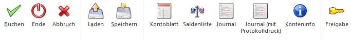
Ø Buchen
Durch Anklicken dieses Buttons oder F5 werden alle eingegebenen Informationen gespeichert und verbucht.
Ø Ende
Damit wird das Fenster geschlossen. Wurden bereits mehrere Buchungszeilen erfasst, die noch nicht verbucht wurden, wird folgende Meldung ausgegeben:
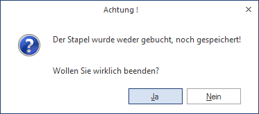
Wird die Meldung mit JA bestätigt, werden alle Buchungszeilen gelöscht. Wird die Meldung mit NEIN bestätigt, kann das Buchungsprogramm normal weiterbearbeitet werden.
Ø Abbruch
Dadurch werden alle erfassten Informationen gelöscht, es kann ein neuer Buchungsvorgang erfasst werden.
Ø Laden
Wurde ein Buchungsstapel mit SPEICHERN unter einer Nummer und einer Beschreibung abgespeichert, kann jeder dieser Stapel jederzeit wieder in die Erfassungsmaske geladen und weiterbearbeitet werden. Nähere Informationen entnehmen Sie bitte dem Kapitel Buchungen laden.
Ø Speichern
Erfasste Buchungszeilen können jederzeit durch Anwahl dieses Buttons unter einer bestimmten Nummer und einer Beschreibungszeile gespeichert werden, damit der Stapel zu einem späteren Zeitpunkt wieder abgerufen und weiterbearbeitet werden kann (siehe Laden). Buchungszeilen, die hier gespeichert wurden, können auch über die Funktion AUTO-BUCHEN mit Hilfe eines selbstdefinierbaren Aktionsplanes periodisch abgerufen werden (Wiederkehrende Buchungen). Nähere Informationen entnehmen Sie bitte dem Kapitel Buchungen speichern.
Ø Kontoblatt
Durch Betätigen des Kontoblatt-Buttons wird für jedes Konto, das im Stapel angesprochen wurde, ein Kontoblatt angezeigt, das die aktuellen Salden, die erfassten Buchungszeilen und die daraus resultierenden Salden (die entstehen würden, wenn der Stapel abgesetzt werden würde) enthält.
Ø Saldenliste
Durch Betätigen des Saldenliste-Buttons wird eine neue Liste geöffnet, in der für die im Stapel verwendeten Konten der alte Saldo, die Summen der Buchungen und der entsprechende neue Saldo angezeigt werden.
Ø Journal
Durch Betätigen des Journal-Buttons wird das Buchungsjournal angezeigt, das alle erfassten Buchungszeilen enthält. Neben den Buchungszeilen werden auch (wenn vorhanden) die OP-Informationen (welche Fakturen werden erstellt bzw. welche Fakturen werden gezahlt) und die KORE-Informationen (welcher Betrag wird mit welcher Kostenart auf welche Kostenstelle gebucht) enthalten.
Ø Freigabe
Durch Drücken dieses Buttons wird das Freigabefenster geöffnet, um den Freigabestatus eines Buchungsstapels verändern zu können.
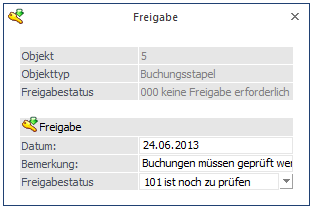
Tabellenbuttons Buchen
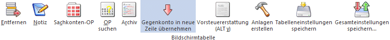
Ø Entfernen
Damit kann die Gegenbuchung gelöscht werden, die gerade aktiv ist (in der Buchungszeile muss der Focus gesetzt sein).
Ø Notiz
Durch Anklicken des Notiz-Buttons kann ein beliebig langer Buchungstext erfasst werden. Dieser kann auch bei den diversen Auswertungen angedruckt werden.
Ø Sachkonten-OP
Durch Anwahl des Buttons "Sachk.-OP" kann eine OP-Verwaltung für Sachkonten durchgeführt werden. Voraussetzung dafür ist, dass das Sachkonto entsprechend angelegt wurde.
Ø OP suchen
Nach Drücken der OP-Suchen Taste kann nach einer Fakturennummer gesucht werden. Es werden vom Programm alle Fakturen aufgelistet, die den Suchbegriff an irgendeiner Stelle der Fakturennummer beinhalten.
Ø Archiv
Befindet man sich in der Zahlungstabelle kann man automatisch in das Archiv wechseln. Die Kontonummer und die Fakturennummer der aktivierten Rechnung werden im Fenster der Archivsuche automatisch vorbelegt. (Nähere Informationen zur Archivsuche entnehmen Sie bitte dem WinLine ALLGEMEIN - Handbuch).
Ø Gegenkonto in neue Zeile übernehmen
Im Fuß der Tabelle gibt es den Button "Konto aus der Vorzeile übernehmen". Wenn der Button aktiviert ist, wird das Konto aus der Vorzeile in eine neue Zeile übernommen. Wenn nicht aktiviert, bleibt das Gegenkonto leer in die nächste neue Zeile. Die Einstellung des Buttons wird pro User gespeichert.
Ø Vorsteuererstattung
Beim Drücken dieses Buttons wird das Fenster "Vorsteuererstattung - Eingabe" geöffnet.
Ø Anlagen erstellen
Beim Drücken dieses Buttons öffnet sich der Anlagenstamm.
Ø Tabelleneinstellungen speichern
Die Spalten einer Tabelle können grundsätzlich an beliebige Positionen verschoben, bzw. in der Breite entsprechend angepasst werden. Durch Anwahl des Buttons "Tabelleneinstellungen speichern" werden die Einstellungen benutzerspezifisch gespeichert und bei dem nächsten Aufruf des Programmpunktes wieder vorgeschlagen.
Ø Gesamteinstellungen speichern
Im Gegensatz zu "Tabelleneinstellungen speichern" können mit "Gesamteinstellungen speichern" mehrere Tabellenaufbauten gespeichert und nach Wunsch geladen werden. Zusätzlich werden Sonderfunktionen der Tabelle (z.B. "Spalte gruppieren") ebenfalls bei der Speicherung bedacht.
Tabellenbuttons KORE
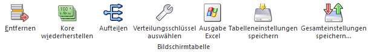
Ø Entfernen
Die ausgewählte Zeile wird gelöscht.
Ø KORE wiederherstellen
Wird dieser Button angeklickt, werden alle bisherigen KORE-Erfassungszeilen zu dieser Buchung gelöscht. Die Aufteilung für die Kostenrechnung muss nochmals durchgeführt werden.
Ø Aufteilen
Beschreibung zur KORE-Aufteilen finden Sie im Abschnitt KORE-Periodenaufteilung
Ø Verteilungsschlüssel auswählen
Ist eine Kostenart mit einem Verteilungsschlüssel eingetragen, öffnet sich durch einen Doppelklick auf diesen Button das Fenster "Buchen - Auswahl Kostenarten-Verteilungsschlüssel". In diesem Fenster werden die ausgewählte Kostenart mit Nummer und Bezeichnung, sowie die Buchungsnummer und das Buchungsdatum zur Info angezeigt. Über die Combobox "Verteilungsschlüssel" kann ein anderer im Kostenartenstamm zu dieser Kostenart hinterlegter Verteilungsschlüssel oder kein Verteilungsschlüssel ausgewählt werden.
Wird ein anderer Verteilungsschlüssel ausgewählt und mit dem Button OK oder der F5-Taste bestätigt, werden die neuen Verhältniszahlen entsprechend berechnet und die Angaben in der KORE-Tabelle geändert.
Ø Ausgabe Excel
Durch Anwahl des Buttons "Ausgabe Excel" wird der Inhalt der Tabelle nach Microsoft Excel übergeben.
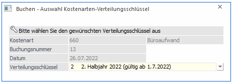
Ø Tabelleneinstellungen speichern
Die Spalten einer Tabelle können grundsätzlich an beliebige Positionen verschoben, bzw. in der Breite entsprechend angepasst werden. Durch Anwahl des Buttons "Tabelleneinstellungen speichern" werden die Einstellungen benutzerspezifisch gespeichert und bei dem nächsten Aufruf des Programmpunktes wieder vorgeschlagen.
Ø Gesamteinstellungen speichern
Im Gegensatz zu "Tabelleneinstellungen speichern" können mit "Gesamteinstellungen speichern" mehrere Tabellenaufbauten gespeichert und nach Wunsch geladen werden. Zusätzlich werden Sonderfunktionen der Tabelle (z.B. "Spalte gruppieren") ebenfalls bei der Speicherung bedacht.
Zusätzliche Optionen
Ø Prot. drucken
Diese Checkbox hat nur in Zusammenhang mit dem JOURNAL-Button eine Funktion: Ist die Checkbox aktiviert und wird der Journal-Button angeklickt, erfolgt automatisch eine Prüfung aller im Stapel erfasster Buchungen auf ihre Richtigkeit. Sollten Fehler vorhanden sein, werden diese gleich in einem Prüfprotokoll ausgegeben. Dabei wird der gerade eingestellte Drucker verwendet.
Ø Konteninfo
Wird dieser Button gedrückt (kann bereits durch die Einstellung aus den Fenstern "Buchen Dialog Stapel", "Buchen Eingangsrechnungen", "Buchen Ausgangsrechnungen" oder "Buchen Splitbuchungen" gedrückt sein), werden eigene Fenster für die Konteninfos geöffnet. Dabei gibt es jeweils ein Fenster für das Soll- und ein Fenster für das Habenkonto.
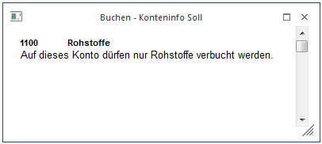
Welche Informationen angedruckt werden sollen, kann frei definiert werden. (Siehe auch Kapitel Buchen - Konteninfo Soll bzw. Kapitel Buchen - Konteninfo Haben.)
Wenn eine Zahlung gebucht wird, steht auch die Option
Ø Zahlungsinfo
zur Verfügung. Durch Drücken dieses Buttons (diese Einstellung ist dann auch im Fenster "Buchen Dialog Stapel" aktiv) wird ein neues Fenster geöffnet, in der die Zahlungsinformationen der Rechnung angezeigt werden, die gerade bearbeitet wird. Diese Option sollte nur dann verwendet werden, wenn das Zahlungsfenster in "Buchungsfenstergröße" dargestellt wird. Um diese Option wieder zu deaktivieren, muss der Button erneut gedrückt werden.